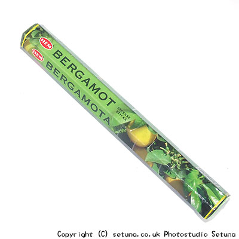

ヘム社/ベルガモット香
HEM BERGAMOT
そのまま嗅ぐとかすかにベルガモットの匂いがしますが、後はほとんどインド香特有の酸味のある匂いです。
火を点けても、いい匂いというほどのものでもなく、少しだけそれらしき香りもしますが、日本製の普通の「お線香」とあまり変わりはありません・・・
悪くはない感じなのですが、インド香らしくないというか・・・。
お盆の頃に田舎に行った時を、妙に思い出す香りです。
焚き合わせで香りがよくなるのはオレンジ系、広葉樹系、また乳香や、没薬等の香りです。

<焚き合わせできるお香>- 「ドゥルガー香」
- ベルガモットの香りが強くなりいい香りに・・・
- 「シバ香」
- ラベンダーのような香りに・・・
- 「クリシュナ香」
- 白檀系の香りに・・・
- 「ヴィシュヌ香」
- ナッツ系リキュールの様な香りに・・・
- 「サイババ香」
- サイババ香特有の薬臭さが抜けて、代わりに甘さが加わりオレンジの様な香りになります。
しっとりとした甘いオレンジの香りが部屋の下の方から中間層にかけてゆったりと流れます。
- 「グリーンアップル香」
- シトラス系が強調されて甘みのある香りに・・・
更新情報取得中